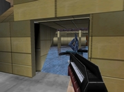
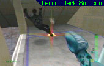
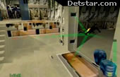
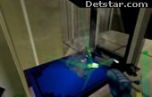
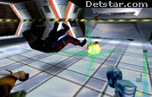

|
.
| Mysteres
de Perfect Dark : Institut Carrington |
| Portes
Fermées |
|
| Mysteres
de Perfect Dark : Institut Carrington |
| Portes
Fermées |
Dans
le Grand Hall se trouve une Porte Bleu Sombre Impossible à ouvrir, si
vous etes en Mode "Institut Carrington". Cependant, vous remarquerez
que dans le Niveau Solo qui lui est consacré, cette Porte est ouverte.
En la passant, vous arriverez sur un Balcon. Vous verrez alors une Deuxième
Porte, fermée cette-fois. Qu'y a-t-il derrière ? Et bien... RIEN !
Avec un Game Shark, en utilisant le Fameux Code Passe-Muraille, on atterrit
dans une Zone complètement vide, avec juste le Ciel, comme dans Felicity
où l'on peut sortir du Conduit d'Aération en guidant son
Slayer. |



| Gardes
Invisibles |
Explication
! Dans le Jeu, il existe pleins de Situations ou des Personnages du
Jeu sont « Stockés »
quelque part dans le Niveau, pour être ensuite utilisés
lors des Cinématiques (comme dans Extraction par exemple). Pour
les Ennemis, c’est différent, le Jeu les met à l’endroit
où ils doivent apparaître, mais sous le sol. Ainsi, lorsque
vous faites exploser quelque chose au sol, les Gardes sont « aspirés
» vers la surface, et on a l’impression
qu’ils apparaissent de nulle part ! Comme vous pouvez vous en
douter, un nombre infini de Gardes « sortent » de ces «
trous », c’est pour ça
qu’on a l’impression qu’ils viennent de nulle part,
que des Ennemis arrivent à l’Infini… Et c’est
stressant !
En mettant le Co-Operative ou Contre-Operative, vous pouvez meme voir
les Gardes réapparaitre juste devant vous ! |








Là ou est l’Astuce de la Mort, c’est que si dès le Début vous faites exploser les Trous (ou « Points de Naissance ») aucun Garde n’en sortira plus jamais ! C’est bien pratique, et c’est pour ça que c’est utile de connaître ces endroits, ainsi, dans l’Institut, en Perfect Agent, c’est beaucoup plus simple ! Pour la Photo dans le Vaisseau Skedar, ça permet d'empecher les Skedars de venir en nombre ! Pour la Photo dans le Building Datadyne, il s'agit de tuer le Capitaine dans Blonde's Revenge avant qu'il n'apparaisse ! Pour la Photo dans la Zone 51, c'est dans la Salle qui donne accès au Salle avec les Containers dans Maian SOS ! |